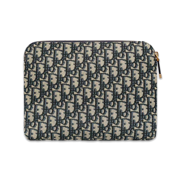
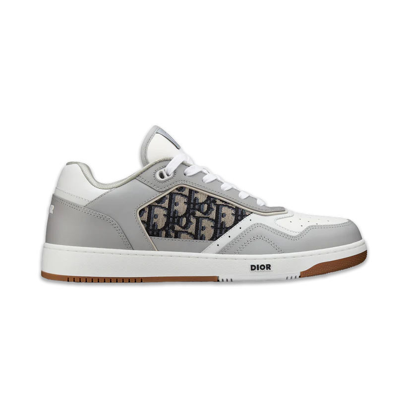
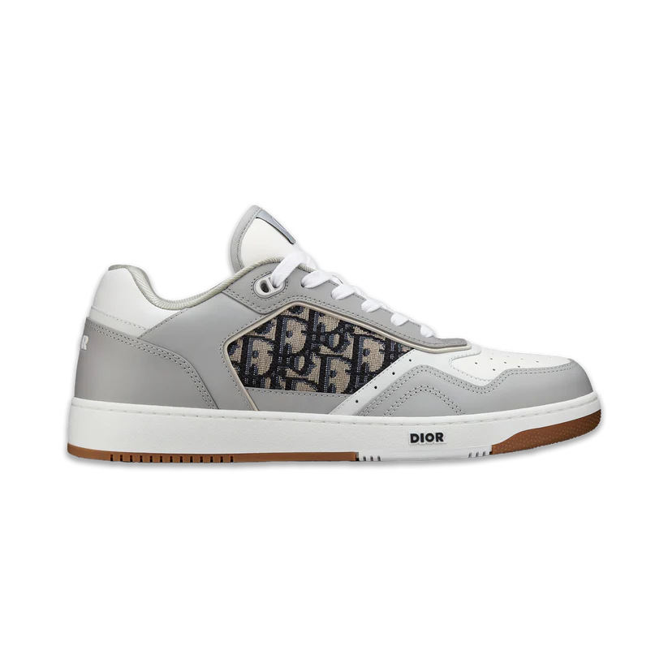

Dior
Bags
Shoes
apparel
>
 

Christian Dior SE (French: [kʁistjɑ̃ djɔʁ]),[1] commonly known as Dior (stylized DIOR), is a French multinational luxury fashion house[2] controlled and chaired by French businessman Bernard Arnault, who also heads LVMH. Dior holds 42.36% shares and 59.01% of voting rights within LVMH.[6][7]
The company was founded in 1946 by French fashion designer Christian Dior. Haute couture is under the Christian Dior Couture division. Delphine Arnault has been the CEO of Christian Dior Couture since 2023.[8]
History
Foundingestablished on 16 December 1946[9][5] at 30 Avenue Montaigne in Paris. However, the current Dior corporation celebrates "1947" as the opening year.[5] Dior was financially backed by wealthy businessman Marcel Boussac.[5][10] Boussac had originally invited Dior to design for Philippe et Gaston, but Dior refused, wishing to make a fresh start under his own name rather than reviving an old brand.[11] The new couture house became a part of "a vertically integrated textile business" already operated by Boussac.[10] Its capital was at FFr 6 million and workforce at 80 employees.[10] The company was really a vanity project for Boussac and was a "majorly owned affiliate of Boussac Saint-Freres S.A. Nevertheless, Dior was allowed a then-unusual great part in his namesake label (legal leadership, a non-controlling stake in the firm, and one-third of pretax profits) despite Boussac's reputation as a "control freak". Dior's creativity also negotiated him a good salary.New Look"
"Bar" suit, 1947, displayed in Moscow, 2011
On 12 February 1947, Christian Dior launched his first fashion collection for Spring–Summer 1947. The show of "90 models of his first collection on six mannequins" was presented in the salons of the company's headquarters at 30 Avenue Montaigne.[5] Originally, the two lines were named "Corolle" and "Huit".[5] However, the new collection went down in fashion history as the "New Look" after the editor-in-chief of Harper's Bazaar Carmel Snow exclaimed, "It's such a new look!"[5][10] The New Look was a revolutionary era for women at the end of the 1940s.[12] When the collection was presented, the editor in chief also showed appreciation by saying; "It's quite a revolution, dear Christian!"[12] The debut collection of Christian Dior is credited with having revived the fashion industry of France.[13] Along with that, the New Look brought back the spirit of haute couture in France as it was considered glamorous and young-looking.[14] "We were witness to a revolution in fashion and to a revolution in showing fashion as well."[15] The silhouette was characterized by a small, nipped-in waist and a full skirt falling below mid-calf length, which emphasized the bust and hips, as epitomized by the "Bar" suit from the first collection.[16][17] The Bar suit was a contribution from the head of Dior's tailoring atelier, a young Pierre Cardin, who was employed by the house from 1947 to 1949.[18] The collection overall showcased more stereotypically feminine designs in contrast to the popular fashions of wartime, with full skirts, tight waists, and soft shoulders. Dior retained some of the masculine aspects, as they continued to hold popularity through the early 1940s, but he also wanted to include more feminine style.[19]